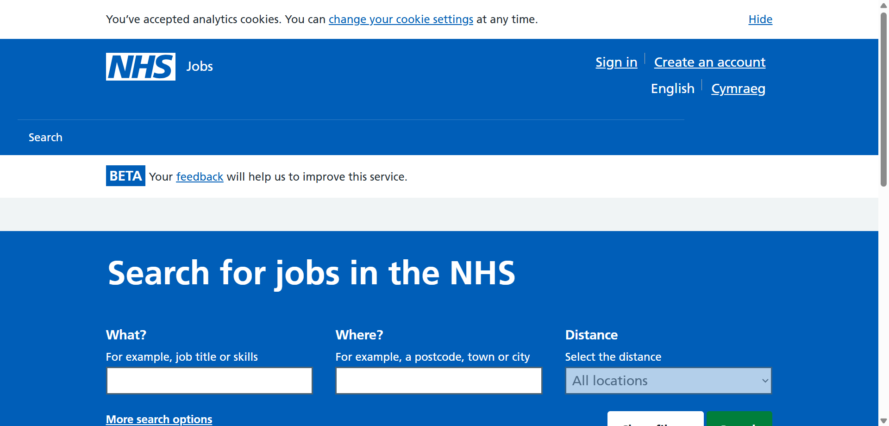
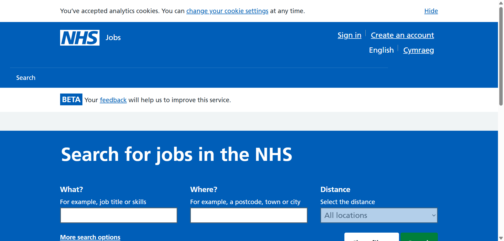

-
To test NHS Job Search functionality
01:23:57 / 00:00:49:626 Fail
To test NHS Job Search functionality
06.25.2025 01:23:57 06.25.2025 01:24:47 00:00:49:626 · #test-id=1As a jobseeker on NHS Jobs Website I should be able search as per my job preferences and get recently posted jobs.FailTo test job seeker able to search jobs by location preferenceFailTo test job seeker able to search jobs by location preferenceGiven I am a jobseeker on NHS Jobs websiteWhen I put my "London" location preference into the Search functionalityThen I should get a list of jobs which matches my "London" preferenceAnd sort my search results with the newest Date PostedstepDefinitions.Hooks.addScreenshot(io.cucumber.java.Scenario)image FailTo test job seeker able to search jobs by location preferenceGiven I am a jobseeker on NHS Jobs websiteWhen I put my "Brimingham" location preference into the Search functionalityThen I should get a list of jobs which matches my "Brimingham" preferenceAnd sort my search results with the newest Date PostedstepDefinitions.Hooks.addScreenshot(io.cucumber.java.Scenario)image
FailTo test job seeker able to search jobs by location preferenceGiven I am a jobseeker on NHS Jobs websiteWhen I put my "Brimingham" location preference into the Search functionalityThen I should get a list of jobs which matches my "Brimingham" preferenceAnd sort my search results with the newest Date PostedstepDefinitions.Hooks.addScreenshot(io.cucumber.java.Scenario)image FailTo test job seeker able to search jobs by location preferenceGiven I am a jobseeker on NHS Jobs websiteWhen I put my "England" location preference into the Search functionalityThen I should get a list of jobs which matches my "England" preferenceAnd sort my search results with the newest Date PostedstepDefinitions.Hooks.addScreenshot(io.cucumber.java.Scenario)image
FailTo test job seeker able to search jobs by location preferenceGiven I am a jobseeker on NHS Jobs websiteWhen I put my "England" location preference into the Search functionalityThen I should get a list of jobs which matches my "England" preferenceAnd sort my search results with the newest Date PostedstepDefinitions.Hooks.addScreenshot(io.cucumber.java.Scenario)image FailTo test job seeker able to search jobs by location preferenceGiven I am a jobseeker on NHS Jobs websiteWhen I put my "EC4A" location preference into the Search functionalityThen I should get a list of jobs which matches my "EC4A" preferenceAnd sort my search results with the newest Date PostedstepDefinitions.Hooks.addScreenshot(io.cucumber.java.Scenario)image
FailTo test job seeker able to search jobs by location preferenceGiven I am a jobseeker on NHS Jobs websiteWhen I put my "EC4A" location preference into the Search functionalityThen I should get a list of jobs which matches my "EC4A" preferenceAnd sort my search results with the newest Date PostedstepDefinitions.Hooks.addScreenshot(io.cucumber.java.Scenario)image FailTo test job seeker able to search jobs by job title / skills preferenceFailTo test job seeker able to search jobs by job title / skills preferenceGiven I am a jobseeker on NHS Jobs websiteWhen I put my "Finance" job title or skills preference into the Search functionalityThen I should get a list of jobs which matches my "Finance" preferenceAnd sort my search results with the newest Date PostedstepDefinitions.Hooks.addScreenshot(io.cucumber.java.Scenario)imageFailTo test job seeker able to search jobs by job title / skills preferenceGiven I am a jobseeker on NHS Jobs websiteWhen I put my "JAVA" job title or skills preference into the Search functionalityThen I should get a list of jobs which matches my "JAVA" preferenceAnd sort my search results with the newest Date PostedstepDefinitions.Hooks.addScreenshot(io.cucumber.java.Scenario)image
FailTo test job seeker able to search jobs by job title / skills preferenceFailTo test job seeker able to search jobs by job title / skills preferenceGiven I am a jobseeker on NHS Jobs websiteWhen I put my "Finance" job title or skills preference into the Search functionalityThen I should get a list of jobs which matches my "Finance" preferenceAnd sort my search results with the newest Date PostedstepDefinitions.Hooks.addScreenshot(io.cucumber.java.Scenario)imageFailTo test job seeker able to search jobs by job title / skills preferenceGiven I am a jobseeker on NHS Jobs websiteWhen I put my "JAVA" job title or skills preference into the Search functionalityThen I should get a list of jobs which matches my "JAVA" preferenceAnd sort my search results with the newest Date PostedstepDefinitions.Hooks.addScreenshot(io.cucumber.java.Scenario)image FailTo test job seeker able to search jobs by job title / skills preferenceGiven I am a jobseeker on NHS Jobs websiteWhen I put my "Software Tester" job title or skills preference into the Search functionalityThen I should get a list of jobs which matches my "Software Tester" preferenceAnd sort my search results with the newest Date PostedstepDefinitions.Hooks.addScreenshot(io.cucumber.java.Scenario)image
FailTo test job seeker able to search jobs by job title / skills preferenceGiven I am a jobseeker on NHS Jobs websiteWhen I put my "Software Tester" job title or skills preference into the Search functionalityThen I should get a list of jobs which matches my "Software Tester" preferenceAnd sort my search results with the newest Date PostedstepDefinitions.Hooks.addScreenshot(io.cucumber.java.Scenario)image FailTo test job seeker able to search jobs by job reference preferenceFailTo test job seeker able to search jobs by job reference preferenceGiven I am a jobseeker on NHS Jobs websiteWhen I put my "259-7226231GSS-A" job reference preference into the Search functionalityThen I should get a list of jobs which matches my "259-7226231GSS-A" preferenceAnd sort my search results with the newest Date PostedstepDefinitions.Hooks.addScreenshot(io.cucumber.java.Scenario)image
FailTo test job seeker able to search jobs by job reference preferenceFailTo test job seeker able to search jobs by job reference preferenceGiven I am a jobseeker on NHS Jobs websiteWhen I put my "259-7226231GSS-A" job reference preference into the Search functionalityThen I should get a list of jobs which matches my "259-7226231GSS-A" preferenceAnd sort my search results with the newest Date PostedstepDefinitions.Hooks.addScreenshot(io.cucumber.java.Scenario)image FailTo test job seeker able to search jobs by Employer preferenceFailTo test job seeker able to search jobs by Employer preferenceGiven I am a jobseeker on NHS Jobs websiteWhen I put my "NHS Business Services Authority" Employer preference into the Search functionalityThen I should get a list of jobs which matches my "NHS Business Services Authority" preferenceAnd sort my search results with the newest Date PostedstepDefinitions.Hooks.addScreenshot(io.cucumber.java.Scenario)image
FailTo test job seeker able to search jobs by Employer preferenceFailTo test job seeker able to search jobs by Employer preferenceGiven I am a jobseeker on NHS Jobs websiteWhen I put my "NHS Business Services Authority" Employer preference into the Search functionalityThen I should get a list of jobs which matches my "NHS Business Services Authority" preferenceAnd sort my search results with the newest Date PostedstepDefinitions.Hooks.addScreenshot(io.cucumber.java.Scenario)image FailTo test job seeker able to search jobs by pay range preferenceFailTo test job seeker able to search jobs by pay range preferenceGiven I am a jobseeker on NHS Jobs websiteWhen I put my "£10,000 to £20,000" pay range preference into the Search functionalityThen I should get a list of jobs which matches my "£10,000 to £20,000" preferenceAnd sort my search results with the newest Date PostedstepDefinitions.Hooks.addScreenshot(io.cucumber.java.Scenario)image
FailTo test job seeker able to search jobs by pay range preferenceFailTo test job seeker able to search jobs by pay range preferenceGiven I am a jobseeker on NHS Jobs websiteWhen I put my "£10,000 to £20,000" pay range preference into the Search functionalityThen I should get a list of jobs which matches my "£10,000 to £20,000" preferenceAnd sort my search results with the newest Date PostedstepDefinitions.Hooks.addScreenshot(io.cucumber.java.Scenario)image FailTo test job seeker able to search jobs by job title, location and Pay range preferencesFailTo test job seeker able to search jobs by job title, location and Pay range preferencesGiven I am a jobseeker on NHS Jobs websiteWhen I put my Pay range, location and job title preferences into the Search functionality
FailTo test job seeker able to search jobs by job title, location and Pay range preferencesFailTo test job seeker able to search jobs by job title, location and Pay range preferencesGiven I am a jobseeker on NHS Jobs websiteWhen I put my Pay range, location and job title preferences into the Search functionalitySoftware Tester London £10,000 to £20,000 Then I should get a list of jobs which matches my "Software Tester", "London" and "£10,000 to £20,000" preferencesAnd sort my search results with the newest Date PostedstepDefinitions.Hooks.addScreenshot(io.cucumber.java.Scenario)image
-
java.lang.AssertionError
11 tests
java.lang.AssertionError
11 failedStatus Timestamp TestName Fail 01:24:01 am And sort my search results with the newest Date Posted To test NHS Job Search functionality.To test job seeker able to search jobs by location preference.And sort my search results with the newest Date PostedFail 01:24:06 am And sort my search results with the newest Date Posted To test NHS Job Search functionality.To test job seeker able to search jobs by location preference.And sort my search results with the newest Date PostedFail 01:24:11 am And sort my search results with the newest Date Posted To test NHS Job Search functionality.To test job seeker able to search jobs by location preference.And sort my search results with the newest Date PostedFail 01:24:15 am And sort my search results with the newest Date Posted To test NHS Job Search functionality.To test job seeker able to search jobs by location preference.And sort my search results with the newest Date PostedFail 01:24:20 am And sort my search results with the newest Date Posted To test NHS Job Search functionality.To test job seeker able to search jobs by job title / skills preference.And sort my search results with the newest Date PostedFail 01:24:24 am And sort my search results with the newest Date Posted To test NHS Job Search functionality.To test job seeker able to search jobs by job title / skills preference.And sort my search results with the newest Date PostedFail 01:24:28 am And sort my search results with the newest Date Posted To test NHS Job Search functionality.To test job seeker able to search jobs by job title / skills preference.And sort my search results with the newest Date PostedFail 01:24:33 am And sort my search results with the newest Date Posted To test NHS Job Search functionality.To test job seeker able to search jobs by job reference preference.And sort my search results with the newest Date PostedFail 01:24:37 am And sort my search results with the newest Date Posted To test NHS Job Search functionality.To test job seeker able to search jobs by Employer preference.And sort my search results with the newest Date PostedFail 01:24:41 am And sort my search results with the newest Date Posted To test NHS Job Search functionality.To test job seeker able to search jobs by pay range preference.And sort my search results with the newest Date PostedFail 01:24:46 am And sort my search results with the newest Date Posted To test NHS Job Search functionality.To test job seeker able to search jobs by job title, location and Pay range preferences.And sort my search results with the newest Date Posted
Started
Jun 25, 2025 01:23:57 am
Ended
Jun 25, 2025 01:24:47 am
Features Passed
0
Features Failed
1
Features
Scenarios
Steps
Timeline